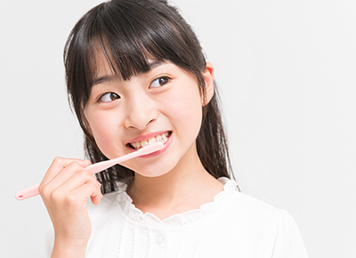
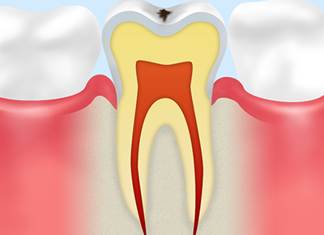
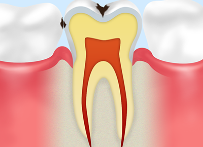
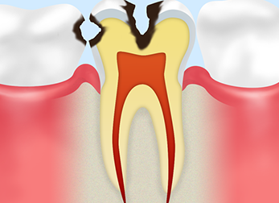
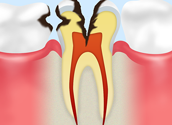
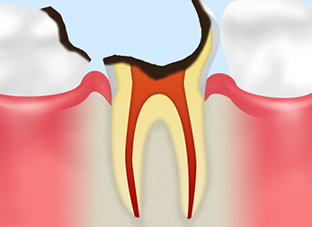
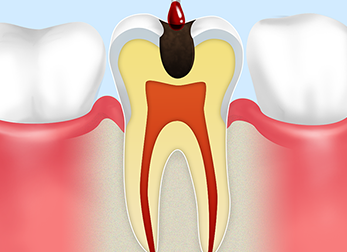
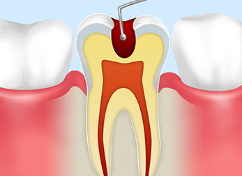
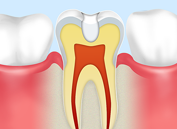
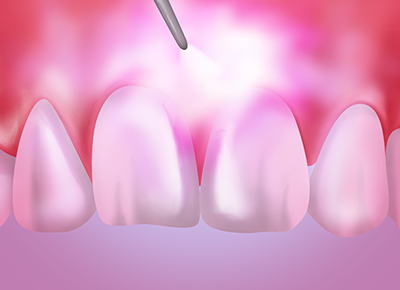

- ホーム
- 一般歯科（虫歯治療）
虫歯治療
大阪四ツ橋駅から徒歩2分の吉川歯科医院では、虫歯治療をはじめ、口腔外科では親知らずの抜歯や再植をおこなっております。
虫歯は痛いと感じたときにはすでに進行していることが多いため、できるだけ早期に治療しましょう。当院では、患者様が感じる治療中の痛みをできるだけ抑えるために静脈内鎮静法や表面麻酔をおこなうほか、電動麻酔器を使用しております。安心して治療をお受けください。
虫歯の原因

虫歯とは、口腔内に繁殖した細菌が歯を溶かす病気のことです。虫歯になる原因の多くは磨き残しです。毎日歯ブラシを使ってブラッシングをしても、実際には口のなかの60%程度しか磨けておらず、磨き残しを栄養とした細菌が酸を産生して歯を溶かしていきます。
虫歯にならないためには毎日ブラッシングし、さらに歯と歯の間に残っている汚れを歯間ブラシやデンタルフロスを使用して取り除く必要があります。また、定期的に歯科医院に通って、ご自身のブラッシングで取り切れなかった汚れをしっかり除去することが大切です。歯科医院で磨き残しチェックや歯のクリーニングを受けていただくことも虫歯予防に効果的です。
進行と治療方法
虫歯はできるだけ初期段階で治療をすることが大切です。虫歯治療を放っておくと症状がひどくなるだけでなく、治療も大掛かりになってしまいます。そこで、ここでは虫歯がどのように進行してどのような治療をするのかについて紹介します。
※表は左右にスクロールして確認することができます。
 |
 |
C0：初期虫歯 |
C1：エナメル質虫歯 |
|---|---|
| 初期虫歯であれば毎日のブラッシングを徹底することで歯が再石灰化されます。ブラッシングだけでなく、フッ素塗布も初期虫歯の再石灰化に有効です。 | エナメル質虫歯は歯のエナメル質にできる虫歯です。虫歯に侵されている歯質だけを削り、歯科用プラスチックの「レジン」という材料を詰める治療をおこないます。 |
※表は左右にスクロールして確認することができます。
 |
 |
 |
C2：象牙質虫歯 |
C3：歯髄まで達した虫歯 |
C4：歯の根っこまで達した虫歯 |
|---|---|---|
| エナメル質下部にある象牙質に虫歯が進行したときは、虫歯に侵されている歯質をすべて削ります。多くの場合、インレーという金属の詰め物を被せる治療になります。 | 歯の神経まで達してしまった虫歯では、最初に神経を取り除きます。その後、虫歯に侵された歯の根っこを消毒して、クラウンという金属の被せ物を被せる治療をおこないます。 | 歯の根っこまで虫歯が進行すると、歯を残すことが難しくなります。そこで抜歯をして、入れ歯やブリッジ・インプラントなど補綴（ほてつ）治療をおこないます。 |
虫歯治療メニュー
吉川歯科医院では虫歯治療においてカリソルブやレーザーを使用しております。
カリソルブ
カリソルブとは、虫歯治療に使用される薬剤です。虫歯に侵された歯質にカリソルブを塗布することで、虫歯が柔らかくなります。歯質が柔らかくなることで、特殊な器具を使用せずに済むだけでなく、患者様が痛みをほとんど感じることなく感染部分を取り除けます。
※表は左右にスクロールして確認することができます。
 |
 |
 |
| カリソルブ溶液を虫歯部分に付け、30秒ほど置いて感染した部分だけをやわらかくする。 | 専用器具を用いてやわらかくなった部分（虫歯部分）を除去する。 | 虫歯部分をすべて除去した後、詰め物を詰めて終了。 |
-
レーザー

レーザーを外科処置後の粘膜に照射することで、出血を抑えながら口内炎の処置やメラニン色素を除去することができます。痛みもほとんどなりません。また、近年ではレーザー治療を知覚過敏や歯の根っこの治療に応用しています。
-
CR（コンポジットレジン）
「歯を大きく削る、抜く、痛い、治療に時間がかかる」というイメージの歯の治療。
健康な歯を削るケースも少なくありません。
しかし、現在の歯科治療は大きく変わっており、そのひとつがあまり歯を削らずに治す「接着修復法」です。歯に強く接着する性質のある高品質のコンポジットレジン（ＣＲ）です。マイクロスコープを使って丁寧に詰めれば、素晴らしい適合性と美しさを兼ね備えた治療になります。
無痛治療への取り組み
歯科といえば、痛くて怖いイメージをお持ちの方も多くいらっしゃるでしょう。吉川歯科医院では、患者様が感じる治療中の痛みをできるだけ抑えるために静脈内鎮静法や表面麻酔をおこなうほか、電動麻酔器を使用しておりますので安心して治療をお受けいただけます。
-
静脈内鎮静法
- 静脈内鎮静法とは、患者様の静脈内に薬剤を注入して患者様の恐怖心や痛みを軽減させる麻酔方法の一つです。患者様の血圧や呼吸などバイタルサインを監視する必要があるため、ある程度の経験や技術が求められます。
-
表面麻酔
- 局所麻酔薬を注入する前に、表面麻酔を患部に塗ることで麻酔針を刺し入れた時の痛みを軽減させることができます。
-
電動麻酔器
- 局所麻酔薬を注入するときに、麻酔液を一気に注入すると患者様が痛みを感じやすくなります。そこで当院では、電動麻酔器を使用して一定の速度で麻酔液を注入しております。
料金表
| カリソルブ | ¥10,000 |
|---|---|
| レーザー(1歯) | ¥100 |
| 静脈鎮静法 | ¥20,000 |
※表記価格は税別価格になります。